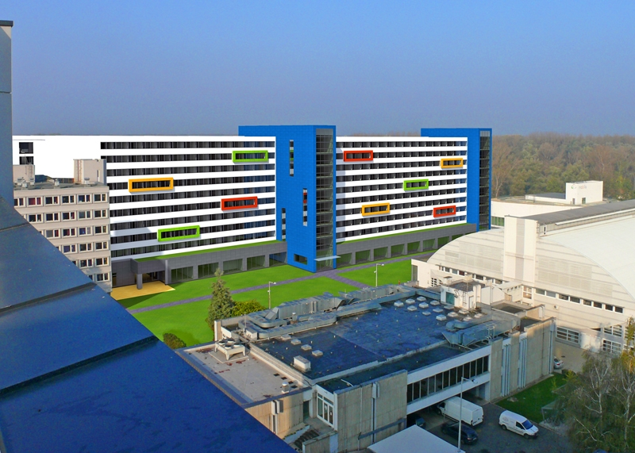

Hungary University Guide
Széchenyi István University
セーチェーニ・イシュトヴァーン大学｜英語で学ぶ正規留学ガイド
ハンガリー北西部のジェールで、工学・情報・ビジネスなどを英語で学ぶ大学。希望する専攻の授業内容、出願条件、学費を確認しましょう。
Quick Summary
正規留学のポイント
Location in Hungary
ハンガリーのどこにある大学？
ジェール｜ハンガリー北西部
ブダペストとは別の都市です。地図で位置を比べ、通う校舎に合わせて住まいを探しましょう。

About the University
大学と学びの特徴
工学、情報、経営、国際関係、農学、デザインなどの分野を持つ大学です。ジェールは自動車産業と関わりの深い都市で、車両工学などを学ぶ進学先の候補になります。
工学・情報系では数学や理系科目、文系でも英語での課題・発表への準備が必要です。専攻ごとの授業内容を比較しましょう。
Degree Programs
英語で学べる学位課程
Engineering
Civil Engineering、Mechanical Engineering、Vehicle Engineering、Electrical Engineering など
Informatics
Business Informatics、Computer Science、Computer Science Engineering など
Business / Social Sciences
Business Administration and Management、International Relations、Sociology など
Agriculture / Design / Health
Agricultural Engineering、Food Engineering、Design、Health Care Management など
Application & Admission
出願条件と募集年度
| 項目 | 内容 | 注意点 |
|---|---|---|
| 英語要件 | B2目安 | プログラムにより異なるため公式確認が必要 |
| 選考方式 | 書類審査など | 専攻により面接・追加条件がある場合あり |
| 数学要件 | 工学・情報系・ビジネス系で必要になる場合あり | 高校での数学履修確認が求められる場合あり |
| 出願料 | 100 EUR / application | 公式Admissionsページで確認 |
| 必要書類 | 成績証明、卒業証明、英語証明、パスポートなど | 年度・出願区分により変更あり |
Tuition & Funding
学費・奨学金・留学予算
以下は当ページ掲載の参考額です。対象年度の記載がないため、出願する年度の金額は大学公式の入学案内で確認してください。
| 区分 | プログラム | 期間 | 学費 |
|---|---|---|---|
| Bachelor | Business Administration and Management | 7 semesters | 1,700 EUR / semester |
| Bachelor | International Relations | 6 semesters | 1,700 EUR / semester |
| Bachelor | Sociology | 6 semesters | 1,700 EUR / semester |
| Bachelor | Agricultural Engineering | 7 semesters | 1,700 EUR / semester |
| Bachelor | Food Engineering | 7 semesters | 1,700 EUR / semester |
| Bachelor | Civil Engineering | 8 semesters | 2,600 EUR / semester |
| Bachelor | Vehicle Engineering | 7 semesters | 2,600 EUR / semester |
| Bachelor | Electrical Engineering | 7 semesters | 2,600 EUR / semester |
| Bachelor | Mechanical Engineering | 7 semesters | 2,600 EUR / semester |
| Bachelor | Business Informatics | 7 semesters | 2,600 EUR / semester |
| Master | Computer Science | 4 semesters | 2,600 EUR / semester |
| Master | Computer Science Engineering | 4 semesters | 2,600 EUR / semester |
| Master | Design | 4 semesters | 2,600 EUR / semester |
| Master | Health Care Management | 4 semesters | 2,000 EUR / semester |
※ 上記はSzéchenyi István University公式Admissionsページで確認できた英語プログラムの学費情報をもとに整理しています。 学費・出願料・募集プログラムは年度により変更される可能性があります。 出願前には必ず大学公式サイトで最新情報を確認してください。
Campus Life
キャンパスと学生生活
Széchenyi István Universityは、ジェールの大学エリアを中心にキャンパスがあります。 専攻によって利用する建物や施設が異なる場合があります。


Housing
住まいと到着後の準備
寮の申込条件・空室・期限を大学に確認しましょう。民間住宅は家賃だけでなく、光熱費と通学経路も比較します。
実際の家賃や生活の様子は、この大学の現役生に確認してください。
この大学の現役生に相談するTalk to Students
この大学の現役生に相談する
Sources
公式資料・情報の確認先
※ 入試要件・学費・学期日程・プログラム情報は年度により変更される可能性があります。 出願前には必ず大学公式サイトで最新情報を確認してください。